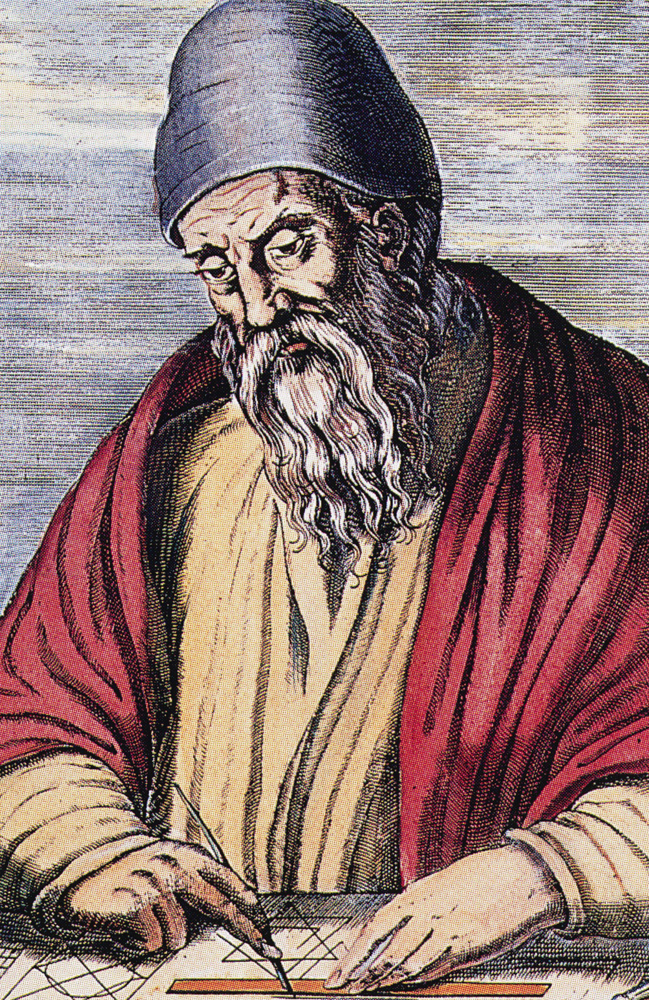

Euclid is the father of geometry. I am his son, an artist and a cs student. Inspired by my father to use geometric shapes to create mind blowing art. Click on my art below and see what happens.
About the artist

Mi Casa
Canvas
El edificio
SVG
+ Documentation
CSS Flexbox
After a bit of research, I ended up choosing CSS flexbox to layout the content. I have used flexbox to center align and structure the canvas and SVG in a row. It was also used to structure the image and the text in the about section. The flex-wrap propertie lets the objects jump to next row if the screen dimension is small enough. This allow for a neat and clean design without needing to use css float and position. An advantage of using flexbox over the grid system is the simplicity as it is only one-dimentational. I already had an idea of how the elements were going to be structured. For a simple project like this, using the grid system would be too much.
HTML canvas and SVG
I have used the HTML canvas to draw a house and some objects in the background. The canvas API draws graphics using JavaScript and the HTML "canvas" element. I have created a seperate function for each object. The functions consists of tags needed to draw these objects. All objects are drawed when the page is loaded. When a user clicks on the canvas it will invocate a redraw function to first reset and clear the drawing before updating it.
SVG has been used to draw a building instead of a house. It also includes a small animation of birds flying. I have used jQuery to control the interaction of the objects. Each element can be controlled by refering to its id or class. Finally I attached a "attr()" function to the element to change its attribute value. This is done so the color of a shape can be changed. For the bird animation, I have used CSS @keyframes rules combined with jQuery to animate the flying birds.
It is easier to draw graphics with SVG compared to using canvas. Using canvas you have to write many code lines to draw an object. While SVG is easier for a simple object it might be harder for more complex projects. It is much simpler to target a specific element by refering to its class or id.
jQuery
I have decided to use jQuery in the SVG graphics and to show and hide the documentation. The jQuery in the SVG was relatively easy as I only used two mouse events; "mouseenter" and "mouseleave" to change the drawing from one state to another. jQuery makes long JavaScript statement short and simple. Read the SVG section for information.
For displaying and hiding the documentation, I used a jQuery method called toggle(). This will change the visibility of the selected elements when triggered. I also included the text() method to change "+ Documentation" to "- Documentation" when it is toggled.
Cross-browser testing
The website has been tested on Safari and Chrome to see if interaction worked with the canvas and SVG. The responsive design has also been checked by resizing windows. Everything seems to work fine and equally across the different browsers.
Useful sources
- Canvas: https://www.w3schools.com/tags/canvas_arc.asp
- SVG: https://www.w3schools.com/html/html5_svg.asp
- jQuery: https://www.w3schools.com/jquery/
- Difference between flexbox and grid: https://css-tricks.com/quick-whats-the-difference-between-flexbox-and-grid/
- Flexbox guide: https://css-tricks.com/snippets/css/a-guide-to-flexbox/